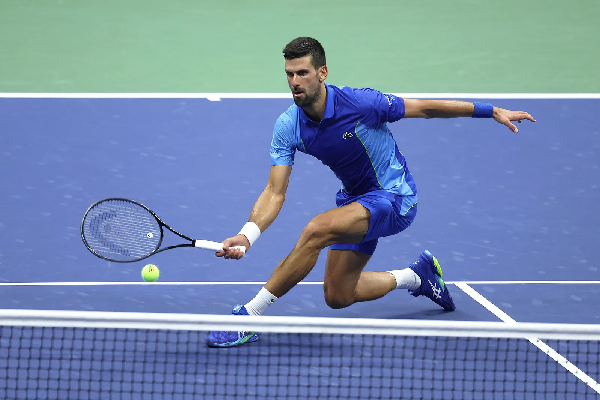

O tênis é um esporte que consiste em bater uma bola contra uma rede, com o objetivo de fazê-la passar para o lado adversário. É jogado por duas pessoas (simples) ou quatro pessoas (duplas). O jogo é conhecido por sua velocidade e precisão, e por grandes competições como o Grande Prêmio.
Melhor jogador do mundo
Novak Djokovic é considerado um dos melhores jogadores de tênis de todos os tempos. Ele é conhecido por sua habilidade, resistência e mentalidade competitiva. Com uma carreira repleta de conquistas, incluindo múltiplos títulos de Grand Slam, Novak Djokovic é uma figura icônica no mundo do tênis e continua a inspirar fãs e jogadores ao redor do mundo.
